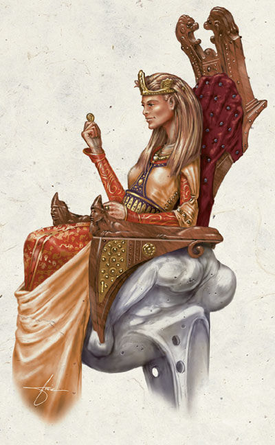
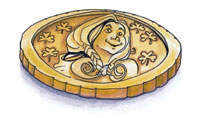

太摩拉 Tymora（幸运女神）

费伦神系 中等神力
别称：幸运女士 Lady Luck，微笑女士 the Lady who Smiles
圣徽：刻有太摩拉脸庞的金币，周围空白处有许多幸运草

居住界域：明水之域 Brightwater
阵营：混乱善良 CG
神职：好运 good fortune，技能 skills，胜利 victory，冒险 adventures
信徒：盗贼，赌徒，冒险者，竖琴手同盟，轻足半身人（半身人的亚种）
牧师阵营：中立善良 NG，混乱善良 CG，混乱中立 CN
神域：混乱 Chaos，善良 Good，幸运 Luck，保护 Protection，旅行 Travel
喜好武器：织运钱币 A spinning coin（手里剑 shuriken）
太摩拉是个优雅、仁慈、友善的女神，掌控着所有的好运。她在费伦大陆各地都拥有大量信徒的原因主要可归功于两点－首先，由于她管辖的神职包括「间不容发的逃 脱」以及「偶然幸运的发现」，因此许多初出茅庐的冒险者选择她作为自己的信仰，以希冀能获得更多的好运（还有随之而来的财富与名声）。然而，第二个原因（也是最重要的一点），则是因为太摩拉在动荡年代（Time of Trouble）中降临阿拉贝尔城（Arabel），在当地的神殿中建造了「女士之馆」（Lady's House），并于该处公开接受信徒的膜拜。在那个魔法狂乱不受控制、看似诸神已经抛弃凡人的混乱时刻中，太摩拉的降临与之后的所作所为，不仅平稳了慌乱 不知所措的人心，也让众人知道仍然有神�o在关心�k们的凡人信徒。在那个绝望的时刻中，「能够直接与尊贵崇高的女神真身面对面交谈」这一点不仅吸引了大量的新进信徒（当然，必须先捐献适量的财富之后才能谒见女神），也让她信徒与神职人员的地位大幅上升。
有部分严肃保守的社会大众认为，太摩拉的追随者过分鼓吹并提倡冒险犯难与各种恶作剧。的确，她的牧师们总是不停地宣扬女神的教义，鼓励信徒们实时把握眼前稍纵即逝的机会，不要因胆怯或犹豫而痛失良机。因此，信仰太摩拉的人通常都热爱生命，且自信地认为微笑女士会保证让自己拥有一个多采多姿（且长寿）的丰富精采人生。许多半身人都相信太摩拉是他 们一族守护女神悠妲拉（Yondolla）的众多子嗣之一，并认为幸运女士在人类国度中的广大信仰是她对人类开的最大玩笑。
太摩拉的牧师 通常被称为「幸运使者」（luckbringers），他们在早上进行祈祷以获得神术。信徒间互相问候时，通常会彼此拥抱以让双方的圣徽互相碰触。教会中没有固定统一的祭典与圣日，不过各个神殿都有自己的特殊庆典。虽然太摩拉牧师通常兼职盗贼或吟游诗人，但也有牧师尝试涉猎其它职业的领域；此外，有少数牧 师会进阶成为「机运使者」（Auspician）。
历史/与众神的关系 History/Relationship：
在「黎明神 劫」（Dawn Cataclysm）之前，幸运与厄运原本都由一位女神管辖－太姬（Tyche）。她的个性反复无常，时常引起各式各样的灾祸。她总是随性所致地处理一切事务；即使对任何事（或人）发生兴趣，太姬的喜新厌旧也让她的兴趣无法持久，不久之后便会移开注意力。当洛山达（Lathander，晨光之神）试图依照 自己的理念重造整个费伦神系时，这位善变的多情女神发现自己也被卷入了这场神�o之间的战争，因此她迅速地下定决心离开这位已经变的过分严肃的爱人，并留给清晨之王一个不幸之吻，让�k去面对自己的命运。
太姬在旅途中发现了一朵美丽的玫瑰花。但奇怪的是，当试图摘下这朵花时，太姬发现自己无法 折断这朵玫瑰的花茎，因此她用不幸诅咒它，使花茎自行断裂。太姬随即拾起玫瑰别在自己的头发上，然后继续自己的漫游－对此事件她并未多加思考，因而丝毫未察觉这是一股腐败力量所设的危险陷阱。事实上，这朵玫瑰是腐朽与衰弱之神魔安达（Moander）的化身。在很短的时间内，摩安达过太姬的耳朵将自己的腐 化力量渗入女神体内，饥渴地吸取女神的生命能量，并由内而外腐蚀女神的容貌与形体。当太姬终于结束漫游回到自己的住处时，她碰上了来访的两位朋友－洛山达与苏伦（Selune，月之女神），以及前来示警腐朽之神攻击行动的阿组斯（Azuth，法师之神，�k在咨询苍白次元体【Pale Tesseract】之后得知此情报）。然而，这个曾是太姬的丑陋生物还来不及迎接她的朋友们，苏伦便对她释出一道净化光束。被击中的太姬从中裂成两半之后倒下，接着从死去神�o的残骸中出现两位新生的神�o。
首先诞生的是太摩拉，这位光辉明亮的女神看起来有点像是太姬的小一号翻版，新生的幸 运女神困惑地看着眼前的三位陌生神�o，好像自己曾经见过�k们一般。接着狂野、大胆、美艳的本莎芭随之而生，堕落腐朽的太姬所化成的正邪两位女神立刻开始互相攻击。若不是其余三位神�o连手制止，她们肯定会互相毁灭。被制止的本莎芭愤怒地咒骂眼前的四位神�o，指责�k们是谋杀太姬该死凶手与卑鄙恶棍，不配她的尊 敬与善意。厄运少女发誓一定会让�k们的信徒永远被厄运折磨，而后便在连串污言秽语的咒骂与辛辣烟雾中消失。但新生的太摩拉对这些污辱只是耸了耸肩，并略微蹙眉以表达心中的不悦。
从此事件之后，太摩拉与本莎芭便展开了一连串的明争暗斗。本莎芭一心一意只想透过这场战争毁灭对手。然而，对太摩拉而言，幸运女士只想阻止厄运少女种种掠夺与破坏的恶行，并偶尔透过精心设计的恶作剧羞辱她的妹妹，以惩罚妹妹的残酷野心。
虽 然用「残忍」批评太摩拉未免有失公平，然而她的确沉迷于制造各种恶作剧，并时常试着用温和的揶揄与戏谑顽皮的手段捉弄那些严肃的神�o－比如海姆 （Helm，护卫之神）以及提尔（Tyr，正义之神）。她除了继承前任女神所有的善良特质之外，也一并继承了太姬在爱情方面的反复无常－自诞生以来她已引诱了许多神�o与数不尽的凡人，只不过她的恋情很少长过两年。她与半身人神�o布兰多布里斯（Brandobaris，半身人盗贼之神）之间一直维持着一段若 即若离的恋情，对方的大胆个性与各种粗鄙的恶作剧与幸运女士十分契合。
教义 Dogma：
人应该大胆行事才算是真正活着。在绝大 多数的情况中，冒险进取的勇气与决心远比谨慎精密的计划更加重要。切勿犹疑不决，应当相信女神，将自己交给命运。要相信自己所拥有的幸运，你就是自己的主人，女神会让你知道这次究竟是幸运还是厄运。只要你勇往直前努力追求自己的梦想，女神就会助你一臂之力。如果没有任何设定目标或方向，那你很快就会跌入本 莎芭的怀抱，并体会到厄运的「慈悲」－也就是毫无怜悯。
牧师与神殿 Clergy & Temples：
太摩拉的牧师热 爱欢乐的气氛与自发进取的活力，他们相信只要肯冒愈大的危险，就能得到愈多的幸运。太摩拉的神殿通常也都是冒险团体的补给站，提供各种服务与商品－比如圣水或医疗药水。有些神殿甚至更进一步，对那些最敢于冒险犯难的冒险者们提供许多秘密援助－教会认为这样对于公开证明女神教义的正确性有极大的正面帮助。牧 师们会大肆宣扬那些能从危险地城与闹鬼墓穴中奇迹般历劫归来的英雄，并宣称冒险者的生还与战利品都是幸运女士对他们敢于冒险的奖励。然而，当神殿资助的冒险队伍被长满触须的活动墙歼灭，或是走进藏在巨大恶魔雕像嘴中的「毁灭黑洞」（Sphere of Annihilation）而永不复返时，牧师们则会一反常态地保持缄默，当作这件事从未发生过。
每一座太摩拉神殿都有自己独立的神职体 系，每座神殿对女神的教义也都各有一套解释，因此当各地的高阶祭司不定期（心血来潮地）举行集会时，便时常发生争执。不过近来达拉马斯�B劳斯尔（Daramos Lauthyr）－阿拉贝尔城女士之馆的高阶祭司－试图挑战这个行之有年的传统，让所有的神殿都统由一位大主教管理－也就是他自己。
太摩拉的化身 Tymora's Avatar：
在动荡年代之前，太摩拉化身通常都是一位满脸诡计、深褐色皮肤的顽皮男孩。然而，自从她在阿拉贝尔城的女士之馆住过之后，她的化身也开始改用新的形象在凡人面前现身－一位穿着华贵长袍、气质高贵柔雅的人类女性，并在披肩的白金色长发上戴着一顶朴素的金制王冠。
虽然太摩拉十分享受多年前待在阿拉贝尔城的那段时光，不过，由于她觉得自己已经尝够了造访主物质界的乐趣，因此目前她大部分的时间主要都耗费在外层异界的各种事件之中。
--
资料来源：费伦大陆信仰与神系《Faiths & Pantheons》
译者：一凡